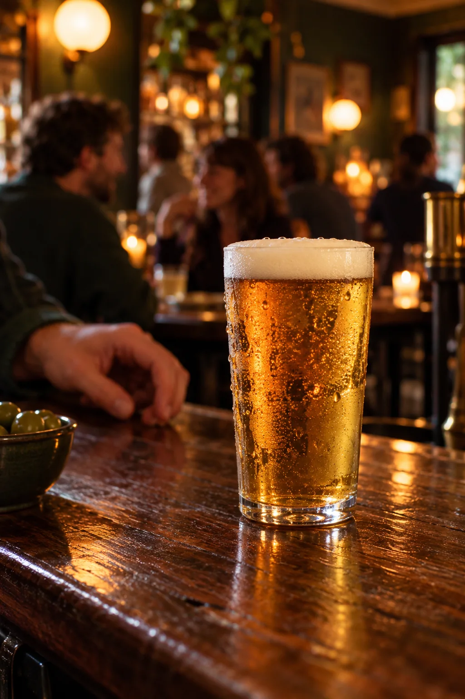
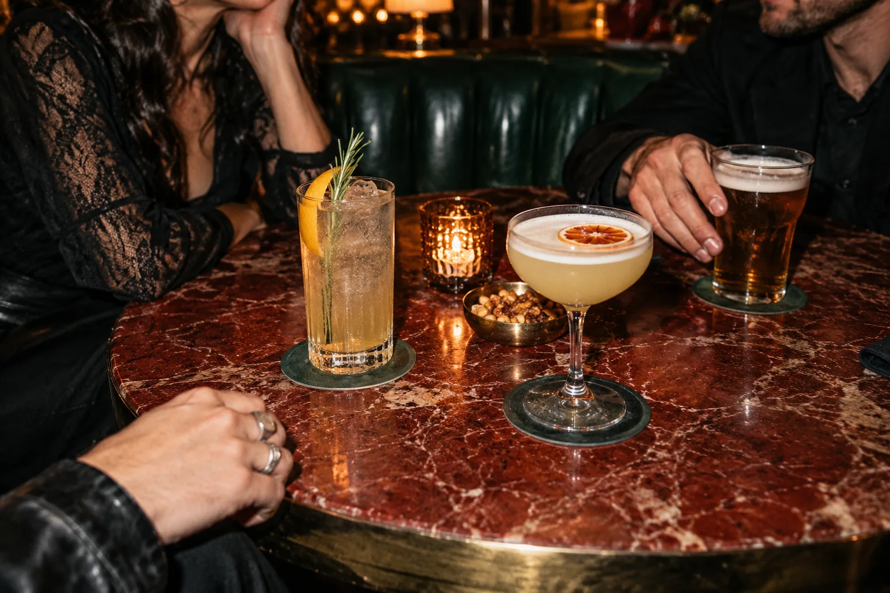
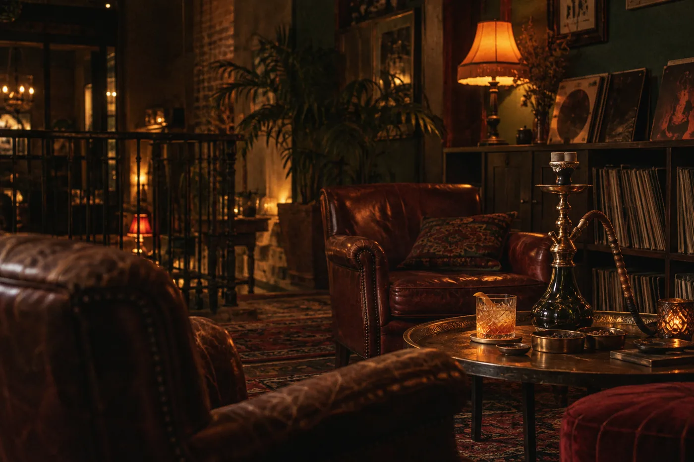

03✳
TIRADORES
DE LA CASA.
Elaboramos nuestra propia cerveza artesana y la servimos desde tres tiradores. Porque la mejor opinión es la que se brinda.
El bar de siempre.
La siguiente ronda, como nunca.

EN LA TIERRA
DEL VINO…
Una cervecería cañera, de las de toda la vida. Café, vermú, pintas, copas y un punto de rock&roll. Vienes por una; te quedas por la conversación.
LA VOTACIÓN ES UNÁNIME: OTRA RONDA.
DE CASA. DE FUERA.
DE LA SIGUIENTE RONDA.
Elaboramos nuestra propia cerveza artesana y la servimos desde tres tiradores. Porque la mejor opinión es la que se brinda.
Artesanas nacionales, belgas, alemanas y otras que van entrando y saliendo. La selección cambia: siempre hay algo por descubrir.
Hay opciones sin gluten para que nadie se quede fuera de la ronda. Pregúntanos por la selección disponible.
La terraza, una jarra bien fría y ese momento en el que el fin de semana empieza a asomar. Los jueves, pintas a precio reducido.
 OTRA RONDA / OTRA HISTORIA
OTRA RONDA / OTRA HISTORIADel Old Fashioned de siempre a las mezclas con apellido Parlamento. Aquí la coctelería también tiene conversación.
Tequila, cassis, lima y ginger beer. Una mezcla con carácter.
Vodka de frambuesa de preparación propia y Royal Bliss al gusto.
Ginebra, limón, albahaca y un final fresco de yuzu.
Bourbon, azúcar moreno y bitters. Un clásico que no necesita presentación.

LA NOCHE TAMBIÉN TIENE SU ACTA ↗En la primera planta te espera el Lounge Bar. Cócteles, sobremesas largas, shishas y ese toque de rock&roll que hace que la noche siga.
Una cachimba, un cóctel y tiempo para alargar la charla. En el lounge conviven sabores clásicos como menta, uva, manzana, melocotón o chocolate.
CONOCE EL LOUNGE BAR
UNA PLANTA MÁS ARRIBA. OTRA CONVERSACIÓN.Cumpleaños, aniversarios, reuniones con amigos o eventos de empresa. Parlamento también se reserva para esos momentos que merecen un sitio propio.
CUÉNTANOS QUÉ TIENES EN MENTE.
HABLEMOS DE TU EVENTOEstamos en el centro de Logroño. Ya sabes dónde empieza la próxima ronda.